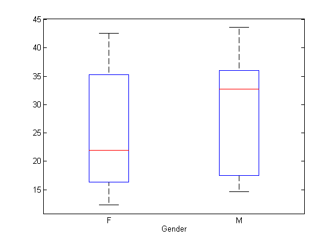

Characterization of Dose-Response Behavior
Contents
The aim of this analysis is to characterize the dose response behavior of 4 different drug candidates in a population. The objective of this analysis is investigate the how the treatments differ, based on theor EC50 values. We will also investigate if subject demographics, like Age and Gender, contribute to difference in the observed EC50.
% Copyright 2011 - 2012 MathWorks, Inc. close all, clear , clc
Data Import
Data.xlsx contains dose-response data from 20 patients, equally divided amongst 4 different treatment groups (5 subjects per group). Each treatment group was assigned to a different drug candidates. The same dosing range was used for all treatment groups.
% Import the data as a dataset object. [ID,Dose,Response,Tmt,Age,Gender] = importfile('Data.xlsx');
Characterize the dose-response behavior
Use a simple sigmoidal model to characterize the response to Drug B
% Get all unique IDs allIDs = unique(ID) ; % get unique subject ID % Preallocate iTmt = cell(size(allIDs)) ; iAge = cell(size(allIDs)) ; iGender = cell(size(allIDs)) ; iEC50 = nan(size(allIDs)) ; iEmax = nan(size(allIDs)) ; for i = 1:length(allIDs) idx = ID == allIDs(i) ; % Extract indices for subject i % Extract data for current ID iDose = Dose(idx) ; iResponse = Response(idx) ; % Fit data model = createFit_v1(iDose, iResponse) ; iEC50(i) = model.EC50 ; % Save demographic/treatment variable for subject iTmt(i) = unique(Tmt(idx)) ; iAge(i) = unique(Age(idx)) ; iGender(i) = unique(Gender(idx)) ; end % Save Results results = dataset(allIDs, iTmt, iAge, iGender, iEC50, 'VarNames', {'ID', 'Tmt', 'Age', 'Gndr', 'EC50'}) ; export(results, 'xlsfile', 'Results.xlsx') ; winopen('Results.xlsx')
Analysis of Variance for Estimated Parameter, EC50, vs Grouping variables
Perform a n-way analysis of variance to test if mean EC50 (from 5 subjects) is significantly different across the treatment groups, age groups and gender. If p is near zero (typically less than 0.01 or 0.05), it casts doubt on the null hypothesis and suggests that at least one sample mean is significantly different than the other sample means.
% Plot EC50 vs. group variables figure; boxplot(results.EC50, results.Age) ; xlabel('Age Group'); figure; boxplot(results.EC50, results.Gndr) ; xlabel('Gender') ; figure; boxplot(results.EC50, results.Tmt) ; xlabel('Tmt Group');
n-way ANOVA
[~, ~, stats] = anovan(results.EC50, {results.Tmt, results.Age, results.Gndr}, ...
'varnames', {'Tmt', 'Age', 'Gndr'}) ;
close all